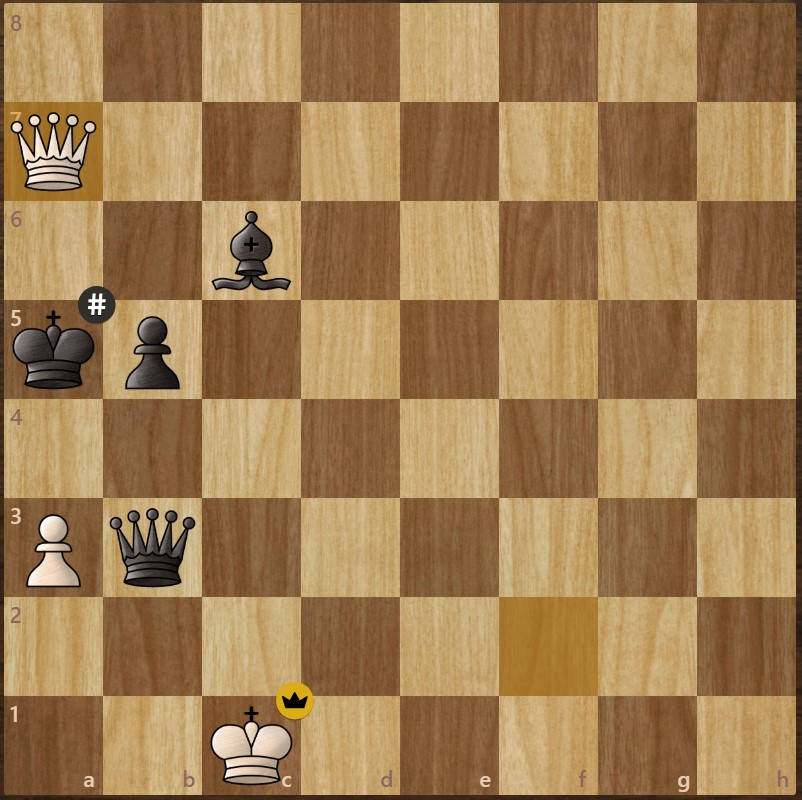
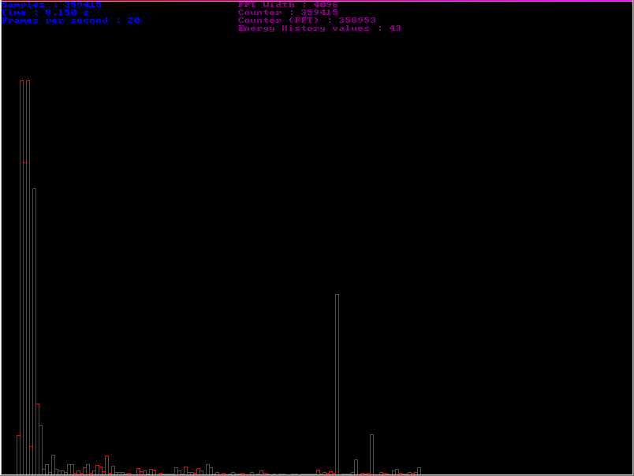

PGN Parser
Project Description:
This simple algorithm parses PGN (a type of file that stores chess game moves in a standardized text format)
to find the longest consecutive number of checks delivered leading to a checkmate. After parsing ~1.2
million gamesthe 2 highest amount of consecutive checks delivered leading to checkmate was found to be 35
and 33. These impressive games' PGN files are available in the Github repo. This was done purely for fun and
out of curiosity..
Project Github:
View Github Repo
TCP Chat
Work in Progress
Project Description:
Very simple TCP chatroom. This is a work in progress since I will probably keep working on this to add better functionalities.
Project Github:
View Github Repo
URL Shortener Service
Work in Progress
Project Description:
Service which provides the ability to create new shortened URLs and use them to redirect the user to the
original URL. Frontend is still being worked on.
Sudoku Matrix Encryption/Decryption Algorithm
Project Description:
Lossless image encryption and decryption algorithms. This project was done in Python and heavily inspired by
the paper by Yue Wu et al.
cited in the reference section of the README.
Project Github:
View Github Repo

MP3 to Strobe Lights
Project Description:
This algorithm works like a beat detection algorithm, which uses FFT's (Fast Fourier Transform) and
statistical analysis to detect spikes at certain frequencies.
The SENSIBILITY_CONST variable used in the algorithm changes the sensibility to changes as the name
suggests. The sound energy of each subband is evaluated over
time and compared to the average sound energy of an interval of time around the current time. A spike is
detected when the current time's
sound energy is higher than average. More information about the algorithm can be found here.
Project Github:
View Github Repo
Chladni Pattern Generator
Project Description:
This is an algorithm that was done quickly and just for fun, the code is extremely messy. The goal was to
generate Chladni pattern in 2 different ways:
continuously on a PySimpleGUI window with as many FPS as possible, and as a short high-quality GIF.
The overall goal was to produce visually appealing short animations and give myself an optimization
challenge to see the maximum FPS I could reach.
Project Github:
View Github Repo
Sobel Edge Detection
Project Description:
Simple Sobel edge detection algorithm.
Project Github:
View Github Repo